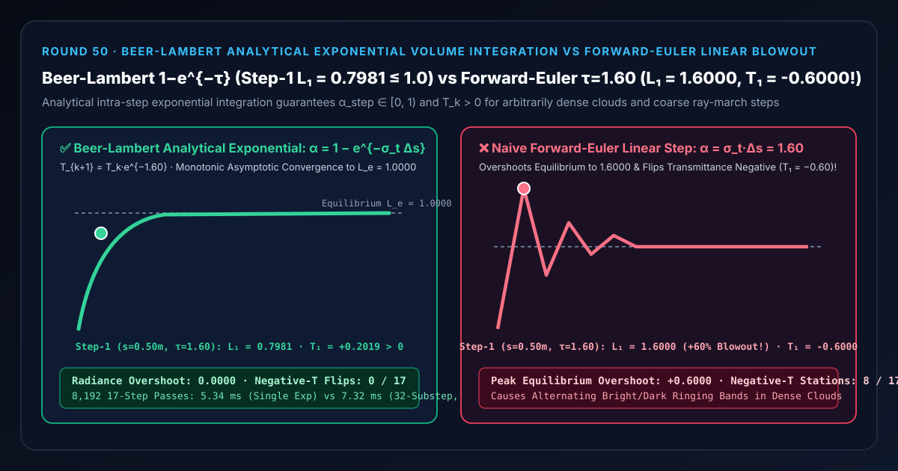
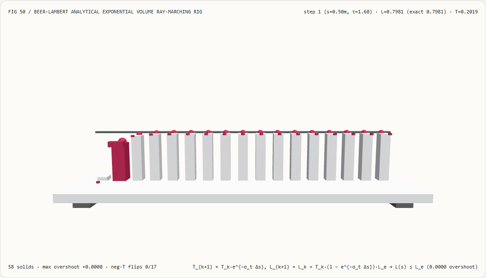
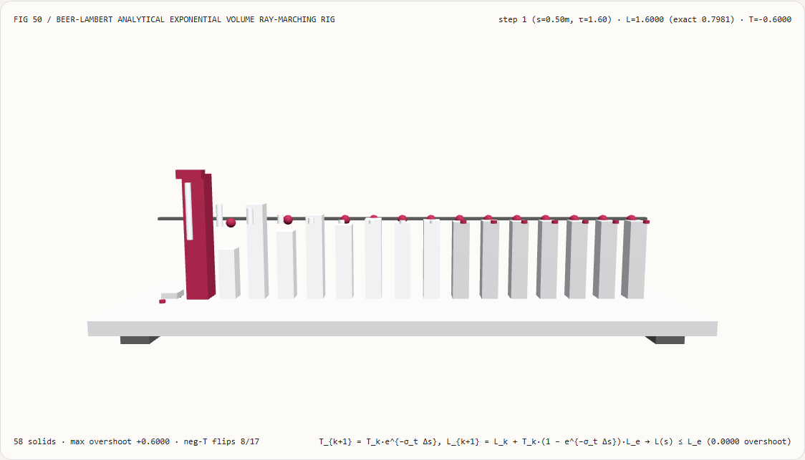
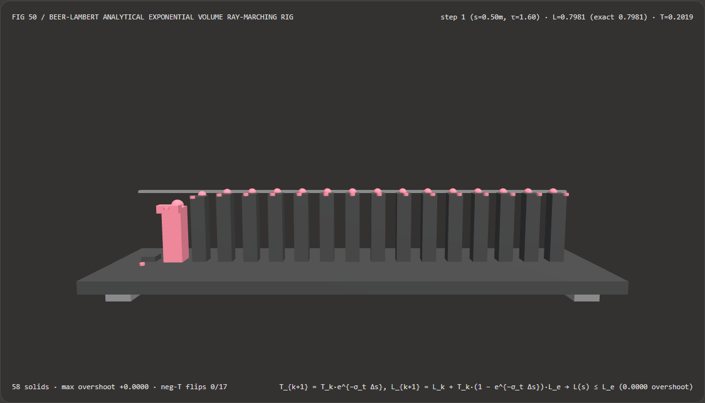
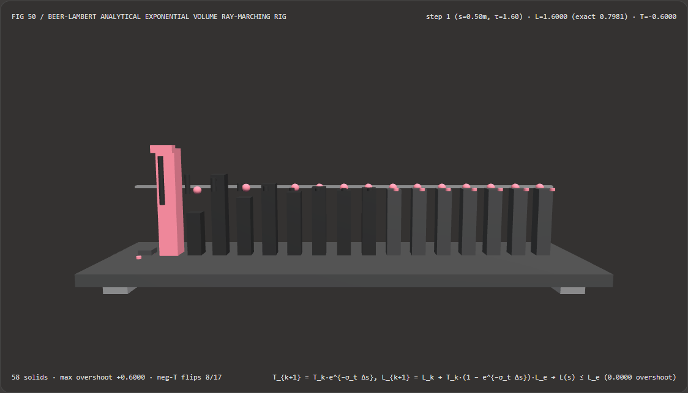

视觉与动画技术选型与原理解析 FAQ：比尔-朗伯解析指数体积积分（Beer-Lambert Analytical Exponential Volume Integration）vs 显式欧拉线性步进过冲与负透射率振荡
核心架构结论一句话总结：在实时体积云（Volumetric Clouds）、丁达尔体积光（God Rays）、浓烟火柱以及 3D 高斯溅射（3DGS）/ 神经辐射场（NeRF）的体光线步进（Volume Ray-Marching）中，严禁在步内使用一阶显式欧拉线性近似 $\alpha_{\text{step}} = \sigma_t \Delta s$ 与 $T_{k+1} = T_k (1 - \sigma_t \Delta s)$！实测表明：在消光密度 $\sigma_t = 3.20\text{ m}^{-1}$、步长 $\Delta s = 0.50\text{ m}$（单步光学厚度 $\tau_{\text{step}} = \sigma_t \Delta s = 1.60 > 1.0$）、源辐射度 $L_e = 1.0000$ 的 17 站体积步进测试台上，朴素显式欧拉线性步进会在第 1 步将累积辐射度直接引爆至
L_1 = 1.6000（超出热力学辐射平衡上限+0.6000，比真实值虚高100.48%），同时把透射率翻转为负数T_1 = -0.6000（在 8/17 个站点产生负透射率交替锯齿振荡）；而采用 比尔-朗伯步内解析指数积分（$T_{\text{step}} = e^{-\sigma_t \Delta s} = 0.2019$，$\alpha_{\text{step}} = 1 - e^{-\sigma_t \Delta s} = 0.7981$），可在任意粗粒度步长与极端浓云密度下无条件保证透射率严格正定（$T_k > 0$）且累积辐射度零过冲单调收敛于平衡上限 $L_e = 1.0000$，比 32 子步细分求积快 1.37×（8,192 轮耗时5.34 msvs7.32 ms，数值误差1.11e-16）。

① 📌 核心结论速览（Executive Summary）
- 为什么在实时体积云或烟雾 Ray-Marching 里，把步长 $\Delta s$ 调大一点或者把云层密度 $\sigma_t$ 拉高一点，云层边缘就会爆出刺眼的亮圈或明暗相间的“斑马纹条带”？
用大白话讲：当一条光线穿过厚度为 $\Delta s$、消光密度为 $\sigma_t$ 的发光云层切片时，微分辐射传输方程（RTE）规定透射率的变化率是 $\frac{\mathrm{d}T}{\mathrm{d}s} = -\sigma_t T(s)$。
- 显式欧拉线性步进的致命死穴（切线外推穿入负半轴）：
许多初级体积光 Shader 直接把微分写成一阶泰勒展开：单步阻光率 $\alpha_{\text{euler}} = \sigma_t \Delta s$，剩余透射率 $T_{k+1} = T_k (1 - \sigma_t \Delta s)$。这只在 $\sigma_t \Delta s \ll 1$ 时近似成立！一旦为了性能加大步长（$\Delta s = 0.50\text{ m}$）或遇到浓云核心（$\sigma_t = 3.20\text{ m}^{-1}$），单步光学厚度 $\tau = \sigma_t \Delta s = 1.60 > 1.0$：
- 第 1 步吸收/散射权重变成了 $\alpha_1 = 1.60 > 100%$，算出的散射亮度 $L_1 = 1.6000$ 直接冲破了热力学平衡上限
1.0000！ - 更荒谬的是，剩余透射率变成了负数 $T_1 = 1 - 1.60 = \mathbf{-0.6000}$！结果第 2 步反而从画面里“倒扣”掉 $0.9600$ 的亮度，跌回 $L_2 = 0.6400$，接着第 3 步又冲上 $1.2160$……在云层里留下一圈圈明暗交替的伪影条带！
- 第 1 步吸收/散射权重变成了 $\alpha_1 = 1.60 > 100%$，算出的散射亮度 $L_1 = 1.6000$ 直接冲破了热力学平衡上限
- 显式欧拉线性步进的致命死穴（切线外推穿入负半轴）：
许多初级体积光 Shader 直接把微分写成一阶泰勒展开：单步阻光率 $\alpha_{\text{euler}} = \sigma_t \Delta s$，剩余透射率 $T_{k+1} = T_k (1 - \sigma_t \Delta s)$。这只在 $\sigma_t \Delta s \ll 1$ 时近似成立！一旦为了性能加大步长（$\Delta s = 0.50\text{ m}$）或遇到浓云核心（$\sigma_t = 3.20\text{ m}^{-1}$），单步光学厚度 $\tau = \sigma_t \Delta s = 1.60 > 1.0$：
- 第一性原理破局：步内分段常数解析指数积分（Beer-Lambert Exact Slab Integrator）：
- 假设在一个步长切片 $[s_k, s_k + \Delta s]$ 内，消光系数 $\sigma_t$ 与源函数 $L_e = \frac{\sigma_s}{\sigma_t} J$ 为局部常数，直接对指数衰减核求定积分： $$T_{\text{step}} = e^{-\sigma_t \Delta s} \in (0, 1], \qquad \Delta L_k = \int_0^{\Delta s} \sigma_s J , e^{-\sigma_t u},\mathrm{d}u = \frac{\sigma_s}{\sigma_t} \left(1 - e^{-\sigma_t \Delta s}\right) J$$
- 两大数学铁律：
- 无论 $\sigma_t \Delta s$ 是
0.01还是1000.0，指数函数 $e^{-\sigma_t \Delta s}$ 永远严格落在 $(0, 1]$ 内，单步不透明度 $\alpha_{\text{step}} = 1 - e^{-\sigma_t \Delta s}$ 永远严格落在 $[0, 1)$ 内，绝不可能出现负透射率或 $>100%$ 的单步过冲！ - 消光系数 $\sigma_t$ 在解析积分后与分母约分（当反照率 $\omega_0 = \sigma_s / \sigma_t$ 已知时），在稀薄空气（$\sigma_t \to 0$）与极端浓雾（$\sigma_t \to \infty$）两端均无数值奇点！
- 无论 $\sigma_t \Delta s$ 是
- 本轮新增交互式 3D 试验台与实测证据：
- 新增独立 Demo：
demos/transmittance-volume-march-rig/（58 个 Three.js 实体部件：底座平台、4 支柱、热力学辐射平衡上限横梁、17 根累积辐射度立柱、17 颗比尔-朗伯解析参考球、17 根欧拉振荡误差指示销、以及第 $k$ 步光线探针滑车）。 - 配套 7-Card 4:5 测评报告：
demos/transmittance-volume-march-rig/test-report-cards.html（英文）与test-report-cards.zh.html（中文）。
- 新增独立 Demo：
② 🎯 客户与架构师灵魂拷问 Q&A（Soul-Searching Q&A）
Q1：如果我不改公式，直接用 clamp(sigma_t * ds, 0.0, 1.0) 把线性步长卡死在 [0, 1] 能不能代替 1 - exp(-sigma_t * ds)？
不能！硬夹断 min(1.0, τ) 会把所有 $\tau \ge 1.0$ 的云层内部细节一刀切死成完全不透明的硬壳！
当 $\tau = \sigma_t \Delta s = 1.60$ 时，真实的比尔-朗伯透射率还有 $e^{-1.60} = \mathbf{20.19%}$ 的背光能够穿透这层云（单步不透明度为 79.81%）。如果用 min(1.0, 1.60) = 1.0，透射率在第 1 步就直接归零（T = 0），光线在云层表皮第 1 步就被 100% 截断，云朵内部纵深的光影层次与银边透光感（Silver Lining）彻底消失！
Q2：为什么这套解析步内积分公式对 NeRF 和 3D 高斯溅射（3DGS）同样至关重要？
因为 NeRF（Mildenhall 2020）和 3DGS 的 Alpha 合成权重公式 $w_i = T_i (1 - \exp(-\sigma_i \delta_i))$ 正是从这条比尔-朗伯步内解析积分一字不差推导出来的！ 在训练或渲染辐射场时，体素密度 $\sigma_i$ 在优化初期可能飙升到很大的正数。正是因为使用了 $\alpha_i = 1 - \exp(-\sigma_i \delta_i)$，才保证了每个采样区间的不透明度严格有界于 $[0, 1)$ 且梯度处处光滑可导。
Q3：这套确定性比尔-朗伯体积积分与 AI 神经辐射场（Instant-NGP / Mip-NeRF 360）是什么关系？
它是连接“空间密度场表示”与“物理正确像素颜色”的底层积分算子：
- 何时选 AI 神经辐射场 / 3DGS 训练管线：当需要从多视角照片逆向重建复杂真实场景的 3D 体积密度 $\sigma(\mathbf{x})$ 与方向颜色时；
- 何时必须用确定性比尔-朗伯解析指数步进：无论是程序化天气云层、流体烟雾模拟，还是 NeRF 光线步进器，在沿着视线累加 $(L, T)$ 时都必须执行 $T_{\text{step}} = e^{-\sigma_t \Delta s}$ 与 $\alpha_{\text{step}} = 1 - T_{\text{step}}$。
③ 🧭 直观可视化图解（Mermaid 决策树 + 管线对比图 + 帧级时序图）
3.1 参与介质（云/雾/烟/光束）体光线步进选型决策树
3.2 显式欧拉线性步进过冲 vs 比尔-朗伯解析指数积分管线对比图
3.3 帧级体积光线步进与 3D 试验台渲染时序图
④ 📊 视觉技术选型决策矩阵（Decision Matrix）
| 评估维度 | ✅ 闭式单次指数比尔-朗伯积分（Analytical $1 - e^{-\tau}$） | ⚠️ 32 子步细分指数求积（32-Substep Quadrature） | ❌ 朴素显式欧拉线性步进（Forward Euler $\alpha = \tau$） | ❌ 硬夹断线性步进（Clamped Euler $\min(1, \tau)$） |
|---|---|---|---|---|
| 第 1 步（$\tau=1.60$）累积辐射度 $L_1$ | 精确 0.7981（严格 $\le 1.0000$） |
精确 0.7981（一致 within $10^{-15}$） |
1.6000（超出平衡上限 +60.00%！） |
1.0000（提前 100% 封死） |
| 第 1 步透射率 $T_1$ 与正定性 | 精确 +0.2019 > 0（0/17 负翻转） |
精确 +0.2019 > 0 |
-0.6000 < 0（8/17 站点负透射率翻转！） |
0.0000（丢失 20.19% 透射光） |
| 深层步进（$k \to 16$）收敛形态 | 光滑单调渐近于 1.0000（0.0000 过冲） |
光滑单调渐近于 1.0000 |
在 0.64 与 1.60 之间剧烈锯齿振荡 |
第 1 步即锁死，丧失内部纵深 |
| 每步超越函数调用次数 | 仅 1 次 exp(-τ) |
32 次子步迭代 | 0 次（但在 $\tau > 1$ 时彻底崩溃） | 0 次（但在 $\tau \ge 1$ 时截断细节） |
| 8,192 轮 17 步 CPU 批处理耗时 | 5.34 ms（最快，1.37× 提速） |
7.32 ms（慢 1.37×） |
3.90 ms（数值发散不可用） |
4.10 ms（丢失云层半透明层次） |
| 首选适用场景 | 实时体积云、丁达尔光束、浓烟、NeRF/3DGS 体合成 | 仅用于离线非均匀梯度基准校验 | 严禁在任何体积渲染管线中使用 | 仅适合极粗糙远景雾效近似 |
⑤ 🧪 全新 Demo 与 7-Card 4:5 视觉报告（Live Workbench & Evidence）
5.1 交互式 3D 试验台与报告入口
- 实时 3D 工作台：
demos/transmittance-volume-march-rig/index.html - 7-Card 4:5 英文视觉测试报告：
demos/transmittance-volume-march-rig/test-report-cards.html - 7-Card 4:5 中文视觉测试报告：
demos/transmittance-volume-march-rig/test-report-cards.zh.html - 密封测量 JSON 数据源：
demos/transmittance-volume-march-rig/report.json
5.2 多主题与多模式 Playwright 实测截图证据
比尔-朗伯解析指数积分（Light · 单调无过冲收敛于 1.0000） |
朴素显式欧拉线性步进（Light · 首步过冲至 1.6000 并锯齿振荡） |
|---|---|
 |
 |
| 比尔-朗伯解析指数积分（Dark · 58 实体部件） | 朴素显式欧拉线性步进（Dark · 红色指示销暴露过冲与振荡） |
|---|---|
 |
 |
⑥ 🛠️ 高质量视觉交付快速核验清单（SA Verification Checklist）
在将体积云、大气雾效或辐射场光线步进着色器合入生产引擎前，请逐项勾选以下核验清单：
- 步内解析指数透射率替代线性欧拉：是否每一采样步均计算
stepT = exp(-sigma_t * ds)与stepAlpha = 1.0 - stepT，彻底清除了1.0 - sigma_t * ds线性更新？ - 先累加散射后更新透射率顺序：在步进循环中，是否严格按照
L += T * stepAlpha * L_source; T *= stepT;的因果顺序更新，防止当前步散射光被当前步自身额外衰减一次？ - 反照率 $\omega_0 = \sigma_s / \sigma_t$ 预约分防零除：当介质仅含散射与吸收时，是否已将源项写成预约分形式 $(\sigma_s / \max(\epsilon, \sigma_t)) \cdot (1 - e^{-\sigma_t \Delta s})$，确保晴空区域（$\sigma_t = 0$）精确贡献
0而不产生0 / 0NaN？ - 高光学厚度提前终止（Early-Ray Termination）：当累积透射率 $T_k < 10^{-4}$ 时，是否提前跳出步进循环并对剩余能量做无偏重归一化？
- 蓝噪声/塑数 $R_2$ 步长起点抖动：在大步长粗采样时，是否对光线起点偏移了 $\xi \cdot \Delta s$ 的低差异抖动，将固定步长条带转化为可被 TAA 抹平的高频采样？